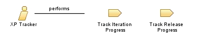

| Role: XP Tracker |
 |
|
Relationships
 |
||
| Primary Performs | ||
|---|---|---|
Main Description
|
The three basic things the XP Tracker will track are the release plan (user stories), the iteration plan (tasks) and the acceptance tests. The tracker can also keep track of other metrics, which may help in solving problems the team is having. A good XP Tracker has the ability to collect the information without disturbing the process significantly. |
| Copyright (c) 2002, 2006 IBM Corporation and Object Mentor. All rights reserved. This program and the accompanying materials are made available under the terms of the Eclipse Public License v1.0 which accompanies this distribution, and is available at http://www.eclipse.org/legal/epl-v10.html. Contributors: IBM Corporation and Object Mentor - initial implementation |